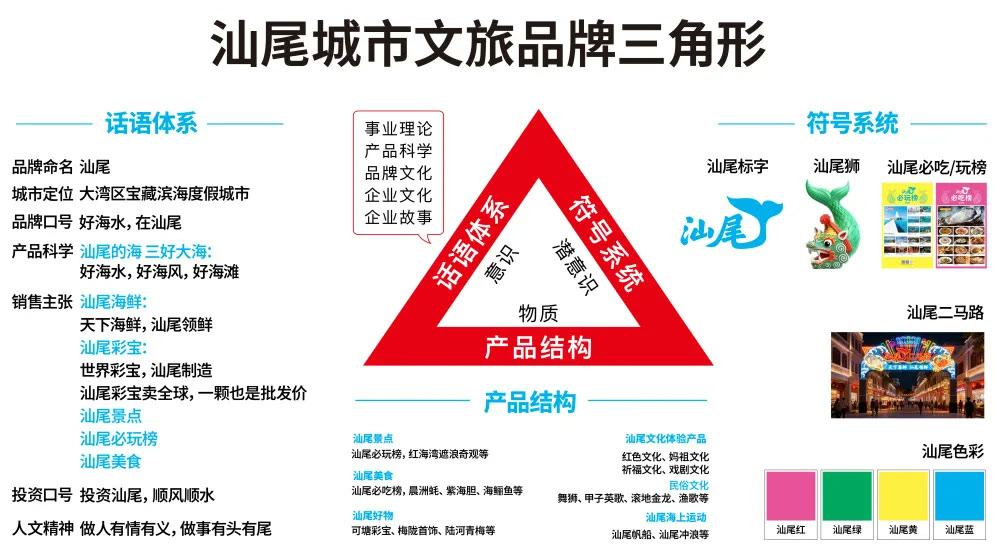
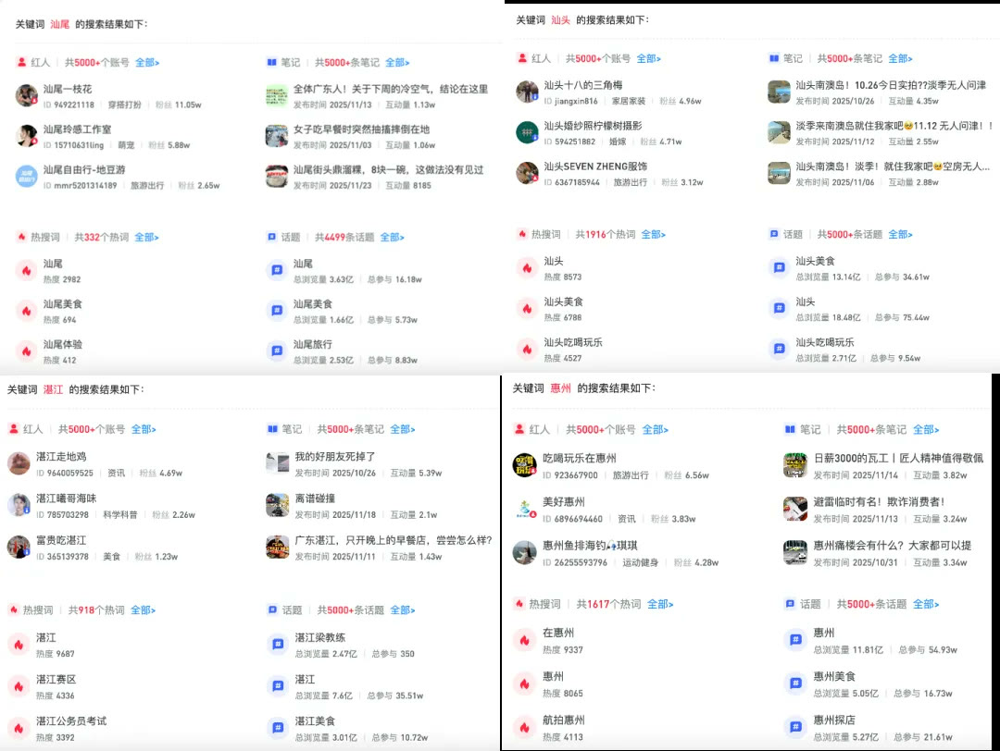

01 · 问题
先识别城市品牌的两大核心问题
外部认知分散与内部文旅产品缺少结构，需要同时解决。

02 · 战略
品牌三角形成系统方案
城市资源、游客价值与公共能力被统一到同一战略。

03 · 产品
重构汕尾文旅产品结构
景点、节庆、物产与体验被组织为更清晰的选择体系。

04 · 传播
符号与三大行动集中放大
视觉、话语与公共行动共同提高城市信号强度。

05 · 日历
请到汕尾过大年形成固定节点
春节主题把城市内容、礼品和到访行动组织为可持续年度活动。